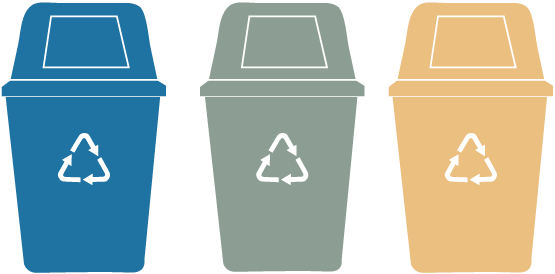

Amsterdam loopt flink achter met afvalscheiden!
Wist je dat er in Amsterdam maar slechts 32% afval wordt gescheiden, terwijl het landelijke gemiddelde al op 60% zit? Dat is een groot verschil en moet verbeterd worden!
Gemiddeld in Amsterdam
Landelijk gemiddelde
Wat kunnen we doen?
Het plan is om in 2050 Amsterdam een afvalvrije stad te maken. Dit plan kunnen we waarmaken als we allemaal een steentje bijdragen. Bijvoorbeeld door een duurzaam initiatief zoals Wonder Wasteland te steunen!
Wonder Wasteland
Dit is een buurtlab in Amsterdam die gescheiden afval inzamelt en upcyclet naar nieuwe producten. Ze zijn op 1 Mei in 2023 begonnen. Ze zijn dus net begonnen met hun initiatief. Bij Wonder Wasteland bestaat afval eigenlijk niet! Zij hebben de quote "Waste Is Food For Creativity!"
Nieuwe Leven
Wonder Wasteland geeft leven aan spullen die we anders weg zouden gooien!
Het doel? Mensen zoals jij en ik bewuster maken van de waarde van onze afval. Ze willen ook grondstoffen zoveel mogelijk hergebruiken door afvalscheiding ietsjes leuker te maken voor ons. Benieuwd hoe dit werkt? Lees verder op de volgende pagina!